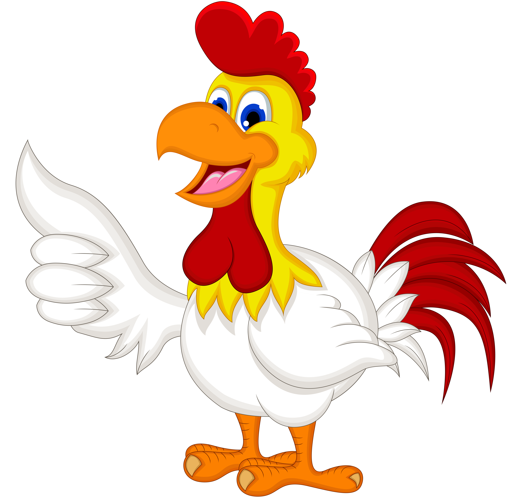

Deskripsi Ayam

Ayam merupakan jenis hewan mamalia yang berasal dari
keluarga Felidae.
Habitat Ayam adalah di darat yang biasanya berbaur dengan manusia
sebagai peliharaan dan ada juga yang hidup liar. Hewan ini merupakan
binatang karnivora, Ayam telah bersatu dengan kehidupan manusia sudah
sekitar 6.000 tahun sebelum masehi, dari kerangka Ayam di Pulau
Siprus. Dan pada saat ini, Ayam adalah salah satu hewan peliharaan
terpopuler di dunia.